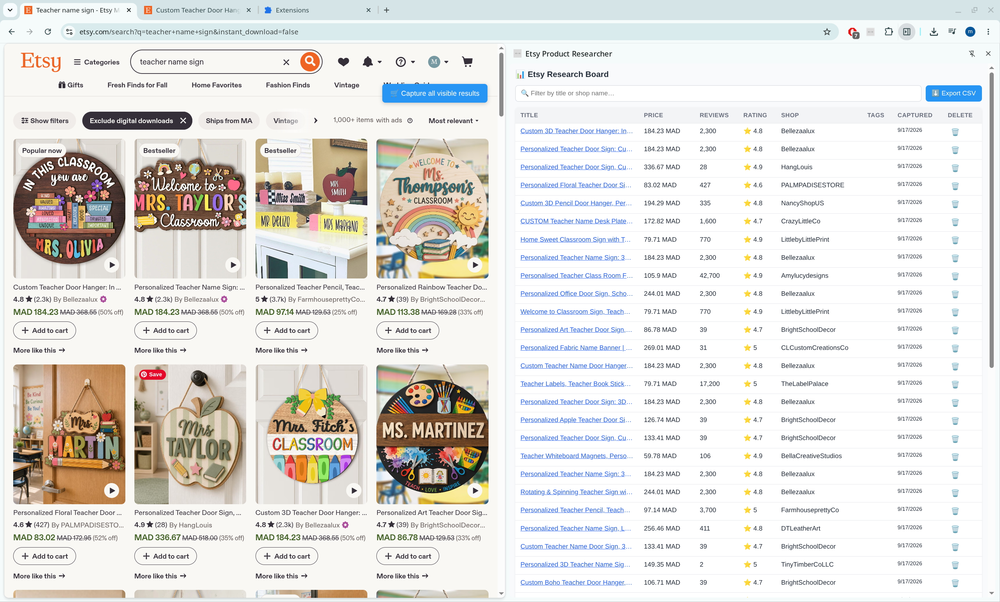

In Development
Etsy Product Researcher
A focused Etsy research tool designed around the parts of product research sellers actually use.

Current Features
- Single-listing & bulk capture (up to 48 listings)
- Extracts title, price, currency, reviews, rating, shop, tags
- Local research table with sortable columns
- Live filtering by title/shop
- CSV export (respects current filters & sorts)
Privacy & Architecture: The extension reads the Etsy pages the user is already viewing and keeps research local rather than requiring a separate cloud dashboard.
Future planned: Product research, estimated sales & revenue, keyword research, trends, growth-rate analysis.
What this demonstrates: Browser data extraction · Local research UI · CSV workflows · Chrome extension architecture